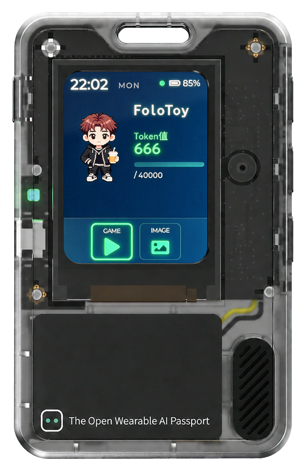

屏幕已关闭
POWER 唤醒
POWER 唤醒
POWER
UP
DOWN
OK
FoloToy AI Passport · 240×320 ST7789P3 · 无触摸屏 · 三键 ADC 阶梯键 · 圆角 30px 遮罩
三键绑定矩阵
导航图（点击节点跳转）
设计规则校验
点击任意条目可跳转到对应屏幕/元素。错误必须清零后再导出交付；警告建议修复；
提示为项目经验（字模、LVGL 池、电量约定等）。规则依据 ai-passport 仓库文档与社区经验。
交付物（交给开发代理）
handoff.md 是 UI/UX 的唯一规格来源：逐元素像素级规格 + RGB565 色值 + 字模字符清单 +
三键交互表 + 行为注记 + 验收清单。开发代理按 ai-passport 的 AGENTS.md / passport-develop 流程实现，
并以 PNG 快照做逐像素对照。交付前请在「设计」页开预览模式，用真机键位完整走查一遍交互。
字体子集生成命令（如用到自定义子集）
handoff.md 预览
规范 · 方法 · 流程
完整规范文档（供 AI agent 直接读取）：本目录
docs/DESIGN_SPEC.md（数据规范）、
docs/AI_DESIGN_GUIDE.md（AI 设计流程）、docs/DEV_HANDOFF_GUIDE.md（开发还原指南）。
AI 设计产出 design.json 后，用顶栏「导入 JSON」载入本工具校验与微调。